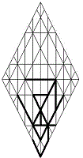

|
nwcyp פישון Pishon |
 |
casual, dispersive:
of global application; an initial tributary of Eden's River of Living Waters: a "hinged" river, having many bends; its reach encompasses Havilah, land of spirals. |
|||||||||
|
The Living Waters of the Garden spill well beyond Eden’s borders,
filling receptive basins. Surging into the bowls of the sephiroth, they
encounter resistance and pool behind the dams of hardened hearts and
inflexible minds. Buoyed by confidence in its tides, River Pishon weighs
against the surface tensions it encounters, testing resistance and
eroding barriers, hollowing out and cleansing such openings as present
themselves.
Rivulets of understanding soon undercut bias enough to ease the
subconscious, allowing Truth to marshal its streams for that instant
when the drip of days shall have weakened resistance enough for Pishon’s
swell to break through all locks and sweep across spiritual frontiers,
clearing darkened souls of debris in its flood and slaking thirst in its
wake. In our worst moments, the structure and dimensions of the Source,
the Tree of Life, is revealed within us, providing a covering, while the
lifting power of Living Waters serves us all.
Pishon is dispersive
p.
It provides
y Wisdom c
the wide coverage it needs to reach and to nourish c all
w
Sons of Man n,
its flood
p
calming y disruptions c brought
on w by
human
Pishon makes no judgment as it cleanses. Regardless p of
the cause y of
mankind’s weaknesses c,
mercy w shall
abound n.
In the flood of Pishon
p, Truth
compensates y for
such woes c as
are common w
to Man n.
The sayings
p entrusted
to Moses were given
y by
Wisdom c as
prophecies about relief w of
suffering n,
not as dictums.
Gematria 446
wmt:
Numerology 68
js
>
14
dy
>
5
h:
Targum:
Remain open and receptive
p to
the presence y of
the Life Breath c as
you contend w with
the many misapprehensions of the inner man n. |
|||||||||||
|
|||||||||||